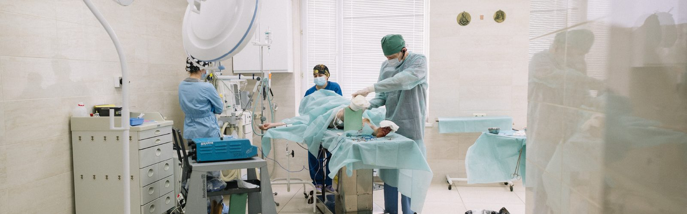
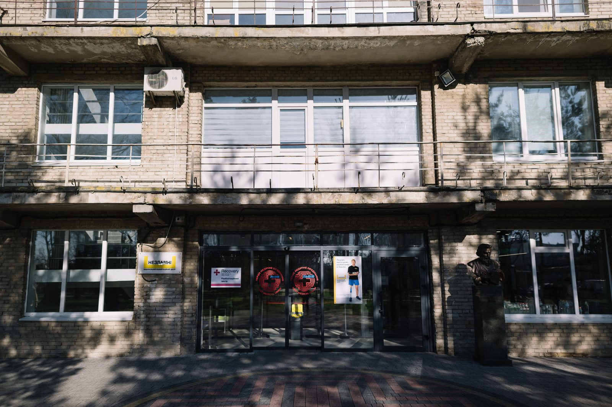
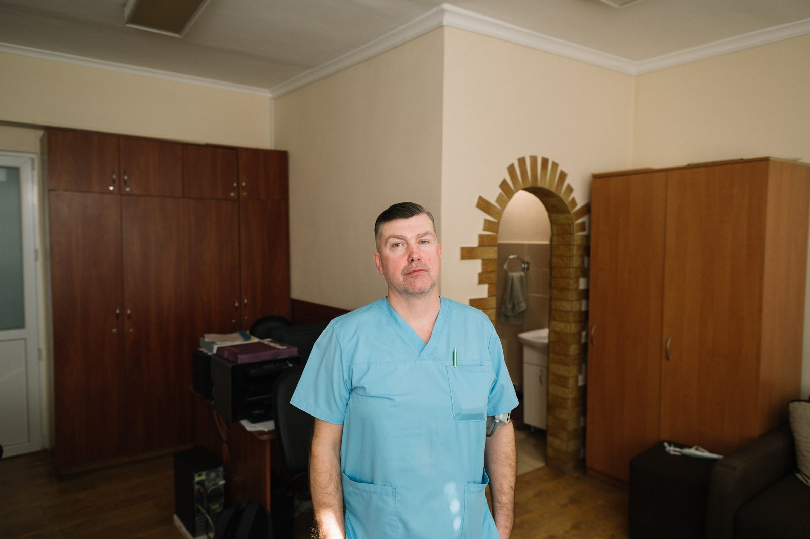
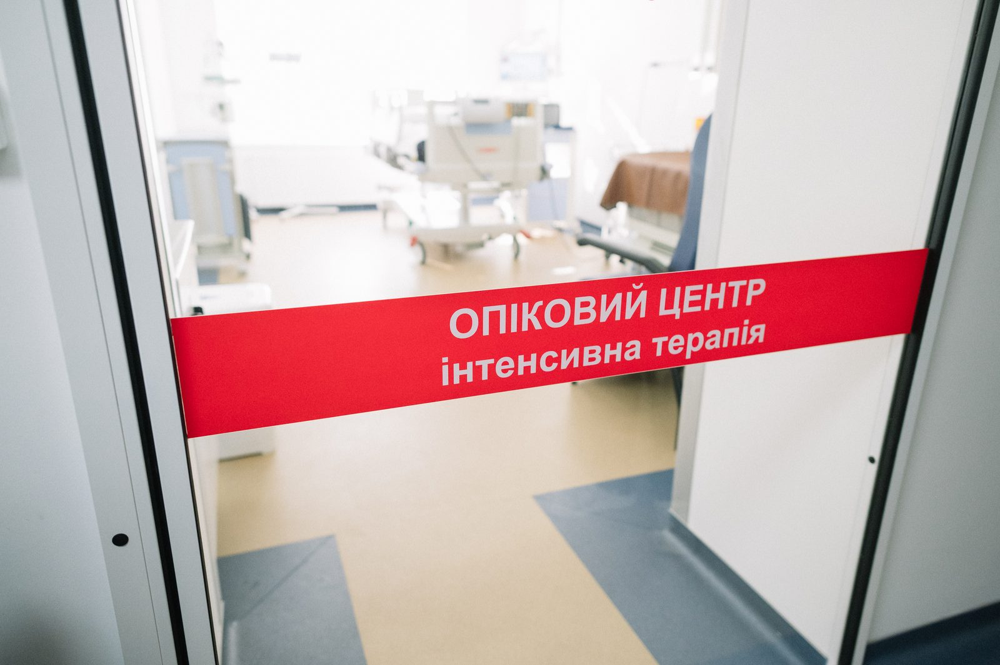
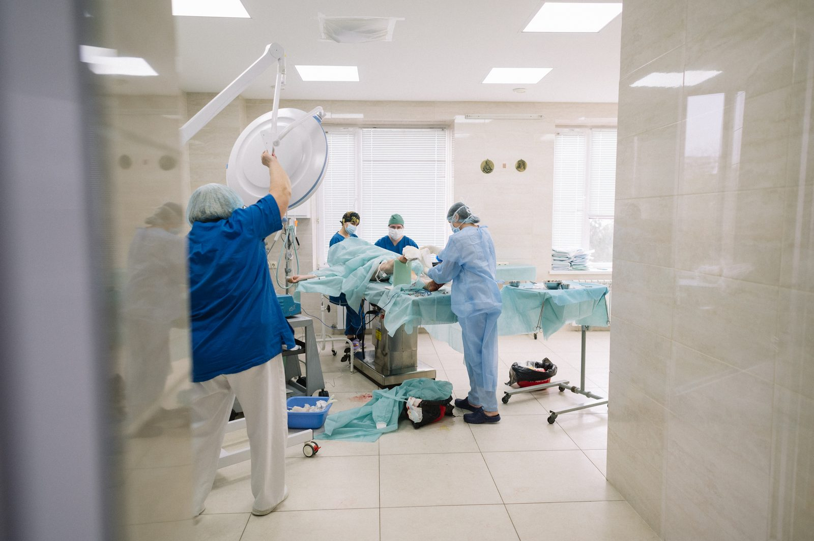
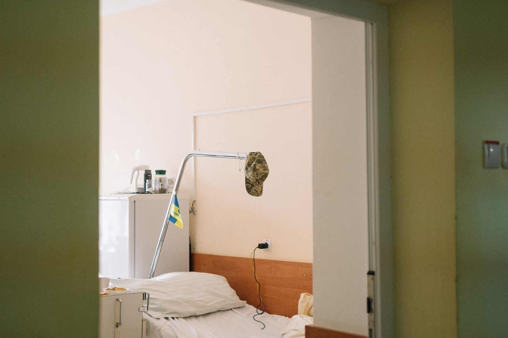
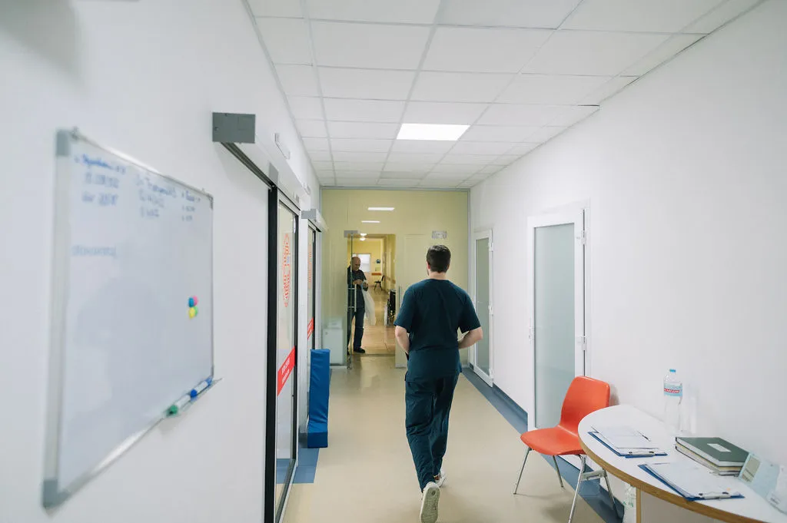

"Unbroken": How the Burn Unit Operates During a Full-Scale War
15.08.24
In 2023, the rehabilitation center "Unbroken" was established at the First Medical Association of Lviv, where people affected by the war could receive comprehensive assistance. The idea behind the center was to bring together all the necessary services for patients in one place: prosthetics, surgery, orthopedics, rehabilitation, etc. Today, the "Unbroken" center is transforming into an ecosystem that includes clinical departments, mental health centers, sports complexes, and dormitories for internally displaced persons.

At the Saint Luke Hospital, one of the center's subdivisions—the burn unit—is located. The most challenging patients from all over the country are brought here. The unit has six burn surgeons and four anesthesiologists. Nurses move quickly through the long corridor between the operating room and the intensive care unit with isolated beds. The unit not only treats burn patients but also handles frostbite treatment, post-burn scar refinement, plastic surgery, and rehabilitation.

"There’s a lot of work," says surgeon Ivan Ryk, stepping out of the operating room. "We used to get soldiers with mine-explosion burns. Now FPV drones have been added. The Russians are dropping thermobaric munitions into bunkers and trenches, and our soldiers can sustain severe thermal injuries."
"There are also more civilian patients," adds anesthesiologist Roman Sarabakha. "Last winter, when the Russians attacked our energy system, there were many household burns. People often tried to light fires with gasoline or suffered from battery explosions."

Nearly all the beds behind the transparent doors of the wards are occupied by patients. Some feel better and take the elevator down to smoke outside. Others lie motionless, covered in layers of bandages. The wards and operating rooms are very warm, which is a particular feature of the burn unit. Burn patients cannot always be covered with blankets, and hypothermia must be avoided as it affects blood clotting and can lead to bleeding. Therefore, the operating rooms are kept at a very warm temperature, and solutions and donor blood are heated with warmers.
In global burn treatment, tactics are constantly changing and improving. Previously, doctors would wait for necrosis to form at the burn site before excising it. Now, they try to perform surgery as quickly as possible.
"The longer the patient stays in the hospital, the higher the risk of complications," explains Ivan Yaroslavovych. "If the patient arrives in a relatively stable condition, we follow an early surgical approach. We take the patient to the operating room and immediately excise the non-viable tissues. Sometimes we can remove all the damaged tissue in one go, for example, when burns cover less than 20% of the body. But with more severe burns, several surgeries are usually needed."

The success of surgeries depends not only on the percentage of the affected body surface, explains Roman Mykhailovych, but also on the location of the burn:
"The critical areas are considered to be the face, hands, and groin. The face swells significantly from burns, which can block the airways. Post-burn scars on the hands can prevent the fingers from bending properly, causing a person to lose functionality. Wounds in the groin area often become infected. So, for example, when the skin on the leg and the same amount on the face are burned, the prognosis for the patient can differ."
After the doctors excise the dead skin, they must cover the wound with new skin. "Only the patient's own skin can successfully take hold," explains Ivan Yaroslavovych. So, doctors take skin from an unaffected area of the body—often from the head or foot—and graft it onto the wound. This is called an autograft. Healthy skin can stretch up to six times its size to cover the affected area. If that is still not enough, autografts can be taken again from the same place—skin regrows, and it is transplanted again.
"But there are situations when we cannot immediately cover the wound with the patient's skin," continues Ivan Yaroslavovych. "For example, the burn area is too large, or the wounds are not ready for transplantation. Then we cover the burns with temporary dressings. We use artificial skin or xenografts, such as treated, disinfected pig skin. The technology for using and cryopreserving pig skin in Ukraine was developed by Professor Bihunyak. We have also recently been allowed to transplant skin from deceased donors. This is very important because leaving a patient with open wounds increases the risk of infection and causes significant suffering."

With severe burns, it is important not only to operate on the patient as quickly as possible but also to start the rehabilitation process immediately. "Sometimes the rehabilitation specialists come directly to the operating rooms," says Roman Mykhailovych. "They work on areas where scars are beginning to form while the patient is under general anesthesia and cannot feel pain. After surgery, the rehabilitation specialists try to 'activate' the patient as soon as possible—moving, sitting up, and performing passive exercises. We once had a patient who managed to take a few steps while on mechanical ventilation."
However, burn rehabilitation can still take a long time. Some patients have to wear compression garments that press on the scars, preventing them from becoming hypertrophic. "A scar can form in six months to a year," says Ivan Yaroslavovych. "Imagine something pressing on your skin all that time. It’s very exhausting for the patient."
In 2023, the burn unit acquired a modern laser for refining post-burn scars in children. This technology makes life easier because children continue to grow, but scar tissue does not. Therefore, post-burn scars require constant medical intervention. Among other technologies that help patients are Clinitron beds. These are aerotherapeutic beds in which micro-particles circulate and essentially keep the patient afloat. This is especially important for patients with burns on their backs, who find it painful to lie on a regular bed. "And on the aerotherapeutic beds, they lie as if on clouds," says Roman Mykhailovych.
At this moment, a doctor from France enters the doctor’s office. He, along with colleagues, came to see how the burn unit operates in Lviv.
"We often perform surgeries together with surgeons from other countries. We work a lot with American colleagues. We've had internships in Poland, Canada, Germany, and the Czech Republic," lists Ivan Yaroslavovych while the French colleague is being led to the intensive care wards. "Of course, Ukrainian hospitals don't have the same equipment as those in the States, and overall, we are still catching up to Western institutions. But we work together, learn from each other, and do everything we can to provide the best care here in Lviv."
Since the full-scale invasion began, Ukrainian burn specialists have encountered injuries that their Western colleagues haven't seen in their entire careers. "There is no war in Western countries, but we have one," says Roman Mykhailovych. "In America, a burn victim with severe injuries is delivered to the hospital within a few hours, but in our case, evacuating a soldier from the front line can take much longer. This changes the nature of the injury and the treatment options. The same goes for frostbite. Our soldiers spend days in trenches, suffering from severe frostbite—our colleagues in Germany said they hadn't seen such injuries for years."
War complicates the provision of care, but even in peacetime, burn treatment is an extremely challenging task. "There’s always a lot of work with burn patients," says Ivan Yaroslavovych. "We constantly have to fight various complications. Deep burns can cause systemic changes in the function of internal organs. The heart, lungs, and especially the kidneys, which remove toxins, are affected—the toxin levels in the blood of burn patients significantly increase."
"During our internship in Poland, we heard this phrase: 'Burn patients remain burn patients for life,'" adds Roman Mykhailovych. "And it's true. Even if patients with severe burns successfully complete all their treatments, they will still have lasting health consequences."

This isn't just about post-burn scars but also about psychological consequences. Patients who have spent a long time in intensive care, felt severe pain, and didn't understand what was happening to them often develop post-traumatic stress disorder (PTSD). Among all ICU patients, burn victims have a very high risk of developing PTSD due to the long treatment duration, painful dressing changes, and the use of medications that alter consciousness, such as strong painkillers.
The main goal of modern burn treatment is to do everything possible to improve the patient’s chances of living a normal life. Doctors start surgeries and rehabilitation as soon as possible to reduce the risk of complications. They strive not only to save the patient’s hands but also to restore their functionality. They offer plastic surgery, skin resurfacing, and compression treatment to reduce post-burn scars, as well as psychological support—to teach patients how to live with the consequences of their injuries. After all, it’s important not just to save a person’s life but to restore its quality.
This series of reports was made possible with the support of the Documenting Ukraine project by the Institut für die Wissenschaften vom Menschen.